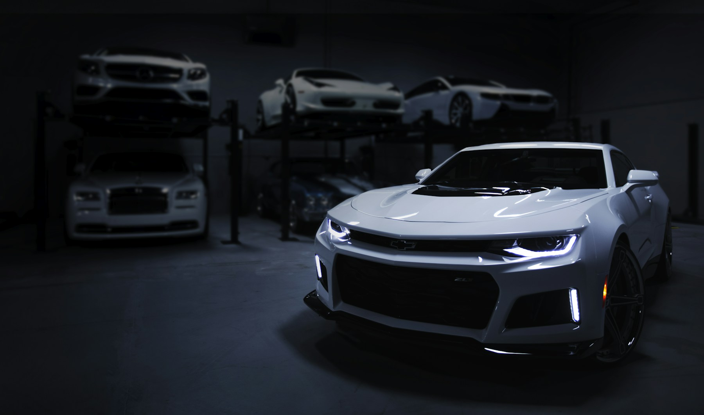
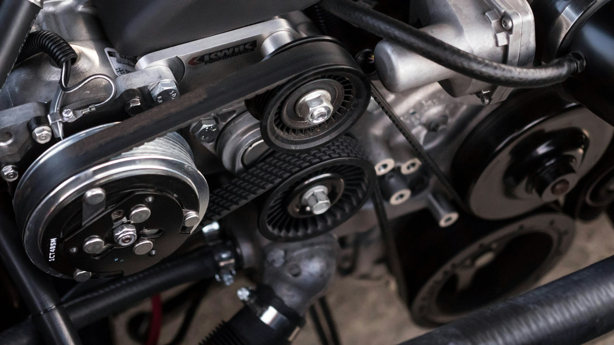

TWÓJ SAMOCHÓD.NASZA ROBOTA.
Dobra diagnoza to początek. Sprawne auto to cel.
Od pierwszej kontrolki po ostatni kilometr próbny.
WIĘCEJ KILOMETRÓW.
OD KONTROLKI
DO SPOKOJU.
Codzienny serwis i trudniejsze przypadki.
Zobacz, z czym możesz do nas przyjechać.
Ceny demonstracyjne za usługę podstawową / robociznę. Części, materiały, czynnik klimatyzacji i dodatkowe naprawy wyceniane osobno.

MA ZNACZENIE.
BEZ ZGADYWANIA.
BEZ NIESPODZIANEK.
Samochód nie musi być zagadką. Zaczynamy od rozmowy i sprawdzenia auta, a dopiero potem proponujemy rozwiązanie.
Najpierw wyjaśniamy
Mówimy, co wymaga naprawy, co może poczekać i z czego wynika koszt.
Potem ustalamy zakres
Decyzja należy do Ciebie. Dodatkowe prace wymagają wcześniejszego uzgodnienia.
Na koniec sprawdzamy
Weryfikujemy wykonaną usługę i przekazujemy zalecenia do dalszej eksploatacji.
ILE TO
KOSZTUJE?
Zaznacz potrzebne usługi i poznaj kwotę startową.
Ostateczny zakres ustalamy po sprawdzeniu samochodu.
PROSTE PYTANIA.
KONKRETNE ODPOWIEDZI.
Bez mechanicznego żargonu.
Tak po prostu łatwiej się dogadać.
Czy muszę wiedzieć, co jest zepsute?
Nie. Wystarczy opisać objawy: kiedy problem występuje, co słychać i jakie kontrolki się pojawiają. Dobór diagnostyki zaczyna się od tych informacji.
Czy cena z kalkulatora jest ostateczna?
Nie. Kalkulator pokazuje przykładową cenę startową podstawowej usługi. Koszt części, materiałów i dodatkowych prac zależy od modelu oraz stanu auta. W prawdziwym warsztacie zakres i kwotę należy potwierdzić przed rozpoczęciem naprawy.
Czy mogę przywieźć własne części?
W tym modelu współpracy jest to możliwe po wcześniejszym uzgodnieniu. Najpierw trzeba sprawdzić zgodność części z autem i ustalić zakres odpowiedzialności za usługę.
Jak przygotować samochód do wizyty?
Przygotuj model, rocznik, rodzaj silnika i opis problemu. Pomocne są informacje o ostatnich naprawach. Usuń wartościowe przedmioty z auta i zabierz kluczyk do śrub zabezpieczających koła, jeśli go używasz.
Czy formularz faktycznie rezerwuje termin?
To strona demonstracyjna fikcyjnego warsztatu. Formularz tworzy lokalne podsumowanie, które możesz pobrać jako plik. Nic nie zostaje wysłane, zapisane na serwerze ani zarezerwowane.
POGADAJMY
O TWOIM AUCIE.
Wybierz usługę, opisz problem i zobacz, jak może wyglądać wygodne zgłoszenie do serwisu.
ul. Warsztatowa 24
00-000 Warszawa
000 000 000
serwis@torque.example
GODZINY SERWISU DEMO
Poniedziałek – piątek08:00 – 18:00
Sobota09:00 – 14:00
NiedzielaNieczynne